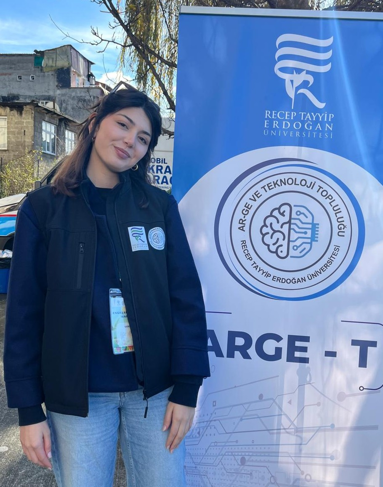
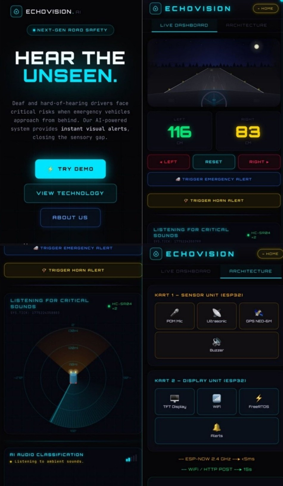
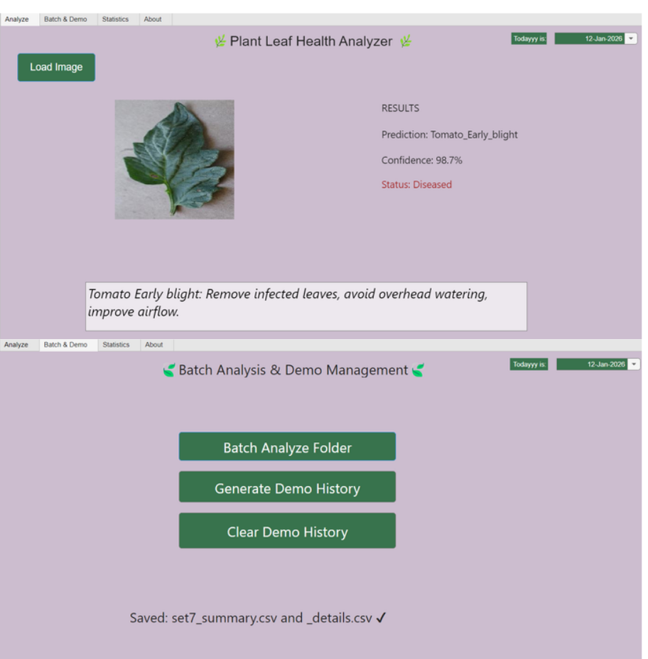
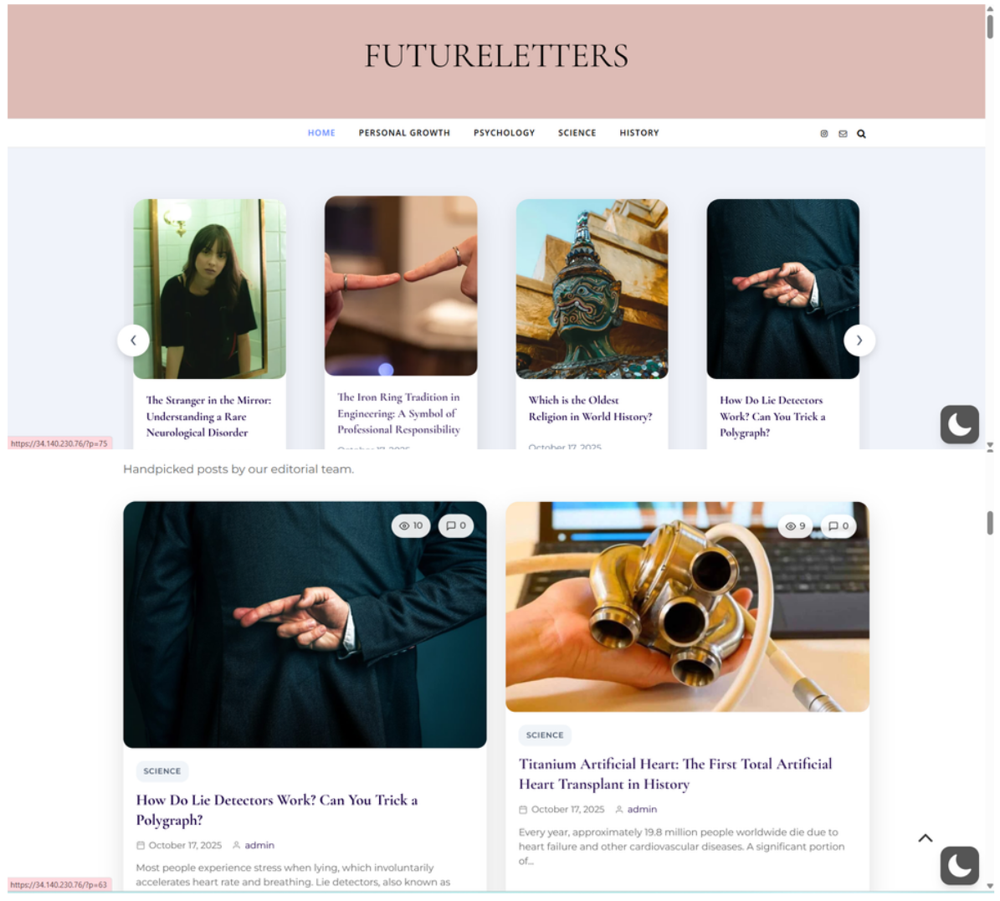

I am a third-year Computer Engineering student with a strong interest in data science, machine learning, and artificial intelligence. I focus on data analysis and interpretation, primarily using R and RStudio, where I work with data manipulation, visualization, and basic statistical analysis.
I am currently developing my skills in machine learning and AI, exploring how data-driven models can be applied to solve real-world problems.
Alongside my academic work, I serve as Vice President of Huawei Student Developers at RTEU, where I help organize events and contribute to the club's Medium publication. I also lead activity coordination at RTEU's R&D and Technology Society.
Since 2021, I have been contributing as a volunteer science writer, producing and translating science and technology content for a broad audience.
In my free time, I practice kickboxing and explore photography.

Projects
Echo Vision Kit Team Project
AI-powered sound detection kit for hearing-impaired drivers
A portable in-vehicle system that classifies ambient sounds in real time and alerts the driver built for people who experience hearing differences on the road.
- ESP32 (Deneyap Kart)
- TinyML via Edge Impulse
- ESP-NOW
- GPS
- TFT display
Result: 4th place at Red Bull Basement 2026 Turkey National Finals

Leaf Disease Classification App
Deep learning–based plant disease detection in MATLAB
A desktop application built with MATLAB App Designer that classifies plant leaf diseases using a pretrained CNN. Supports both single image analysis and batch dataset evaluation with performance metrics.
- MATLAB App Designer
- CNN (pretrained)
- Deep learning
Key features: Confidence scoring, treatment recommendations, confusion matrix, CSV export

Conscious Shopping App Team Project
TÜBİTAK 2209-A funded — Mobile app for smarter food choices
A Flutter app that evaluates scanned products using a Nutri-Score–style algorithm and suggests healthier alternatives when needed.
- Flutter
- Dart
- C++
Key features: Nutritional scoring, ingredient breakdown, alternative product suggestions
FutureLetters
Personal science & culture blog
A self-hosted WordPress blog covering science, psychology, history, and personal growth. Deployed on Google Cloud with original English-language articles adapted from Turkish science writing.
- WordPress
- Google Cloud

Daily Productivity Analysis
Personal habit tracker and productivity scoring tool
An R script that analyzes daily habits — sleep, deep work, exercise, screen time — and calculates a productivity score to identify patterns over time.
- R
- ggplot2
- dplyr
Key features: Weighted scoring algorithm, top vs bottom day comparison, trend visualizations, CSV export
Writers Organizer
C++ application for writers to manage articles, ideas, and income
A command-line tool built to practice advanced data structures — each module uses a different structure suited to its use case.
- C++
- CMake
- GoogleTest
Key features: Article tracking, idea notebook, submission log, income tracker
Data structures: Doubly & XOR linked lists, hash table, B+ tree, stack/queue, graph algorithms, Huffman encoding
Test coverage: 90%+
Get In Touch
Drop me an email if you want to contact!